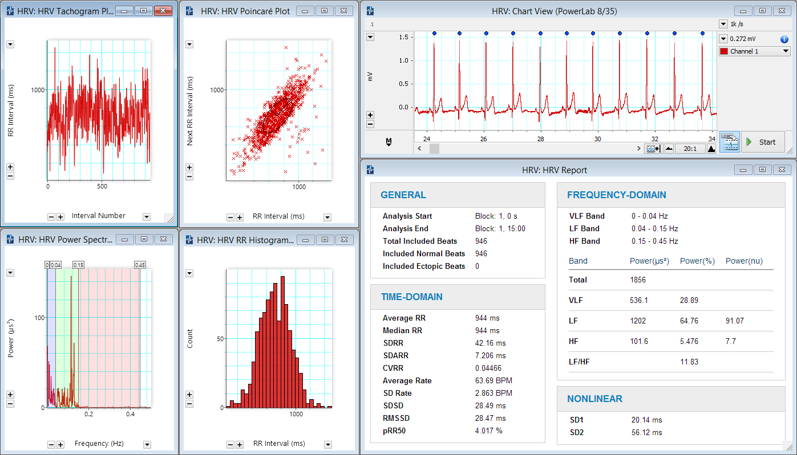
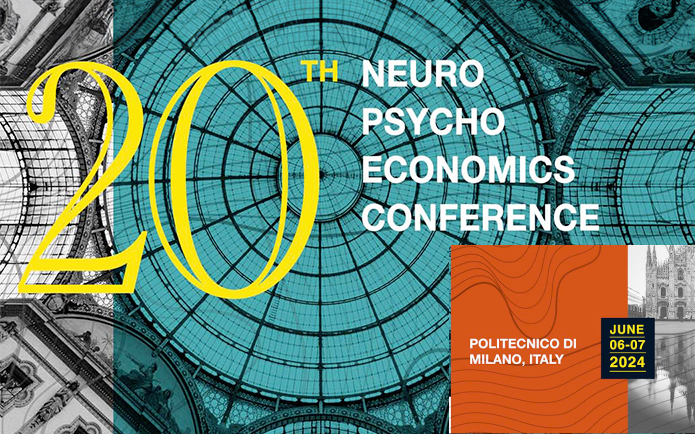
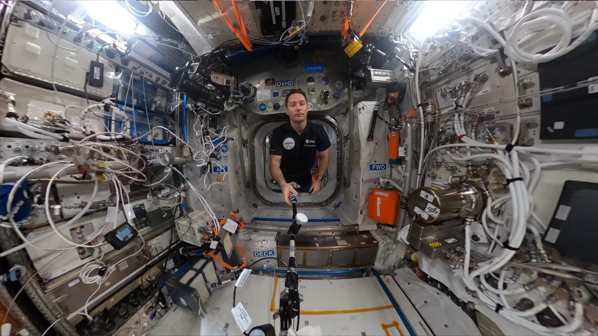
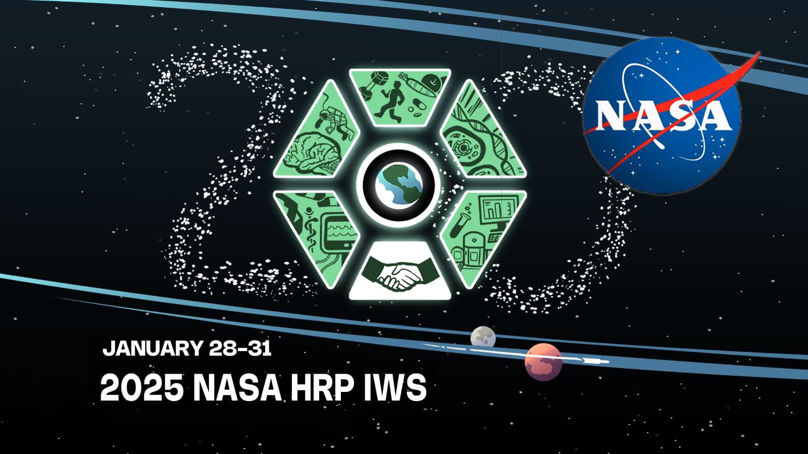

KinKinetics helps you hold it steady.
We're building a wearable that reads the body's stress signals as they rise, flags the moment judgement starts to slip, and steps in to help you stay clear-headed — starting with healthcare teams under pressure, and built for anywhere people have to perform under load.
The problem
A surgeon in hour ten, a clinician mid-crisis, an operator far from help — the body destabilises minutes before judgement visibly slips. That window is where mistakes are made, and it is where we intervene.
Before you consciously feel overwhelmed, your physiology already shows it — skin conductance climbs, heart-rate variability drops. The earliest warning is measurable.
A missed cue in intensive care, a rushed call under time pressure — the moments that matter most are exactly the moments stress degrades performance.
Knowing you're stressed doesn't restore focus in the moment. What's missing is a system that reads your state and acts on it in real time — while it still counts.
The technology
KinKinetics reads the body's stress signals, turns them into a live estimate of cognitive state, and drives a calming intervention when it's needed — then learns from the result.
Skin conductance, heart rate and heart-rate variability — the autonomic signatures of stress and cognitive load — captured continuously from a lightweight wearable.
A signal-processing and machine-learning pipeline fuses those signals into a live state — Calm, Elevated or High — and is being extended to flag decision instability before it happens.
Today: real-time visual and haptic feedback tied to state. On the roadmap: gentle, non-invasive vagus-nerve stimulation that adapts to the state the system just measured.
KinKinetics is an early-stage research prototype demonstrating concept feasibility. It is not a medical device and makes no diagnostic or therapeutic claims.
Why it's hard
The value isn't the sensors or the strap. It's the closed loop, the personalisation, and the data the system builds up over time — and none of those are quick to replicate.
Reading physiological state and driving the right response, moment to moment, is a genuine real-time control problem — and it's the core of what we build.
Stress signatures differ from person to person, so the system adapts to the individual rather than leaning on one-size-fits-all thresholds.
Every session deepens a multimodal record of physiology and response that keeps improving the models — an advantage that grows the more the system is used.
Where we are
A working prototype, non-dilutive backing, and research already presented on international stages.
A live sense → decide → respond loop: skin conductance and heart rate, an adaptive state classifier, real-time feedback, and a Python analytics engine.
Non-dilutive Idea Grant backing from the Kerala Startup Mission, funding prototype development.
Stress-detection pipelines validated against established public physiological datasets for scientific credibility.
Presented at GLEX 2025, the NASA Human Research Program community, and ELGRA — building credibility in the space-health domain.
Who it's for
The same closed-loop system serves each phase with different form factors and software tiers — research-grade work funds the evidence base that unlocks the markets after it.
Clinicians under sustained stress and neuroscience / human-factors labs — a research-grade stack with no medical-device blocker.
Resilience for roles where a degraded decision is costly — emergency services, aviation ops, and surgical training programmes.
Space missions, isolated and confined stations, and defence — autonomous support where crew cognition is mission-critical.
The science
KinKinetics sits at the intersection of neuroeconomics, autonomic physiology and space medicine — a founder-led research programme, not a repackaged consumer gadget.
How decisions destabilise under stress, uncertainty and time pressure.
HRV, electrodermal activity and vagal tone as readouts of cognitive load.
Non-invasive vagus nerve stimulation as a closed-loop intervention.
Cognitive stability and countermeasures for isolated, confined, extreme settings.
The founder
Founder · Researcher in neuroeconomics & decision science
KinKinetics is led by a researcher working at the intersection of behavioural science, neuroscience and high-stakes decision-making. In a field where scientific legitimacy earns customer trust, that is the unfair advantage: the person building the decision-stability wearable is the person who studies how decisions break under pressure.
Connect on LinkedIn →Insights

Machine-learning models that anticipate cognitive load before mission-critical decisions.
Read more →
Cognitive stability under stress, and how adaptive systems can protect it.
Read more →
Neuroplasticity as a mission-critical skill for long-duration flight.
Read more →Advances in real-time physiological monitoring for astronaut health.
Read more →Showcasing the neuroadaptive efficiency paradigm on a global stage.
Read more →
Advancing decision support for long-duration spaceflight.
Read more →We work with research labs, clinical teams and investors who want to help take this from prototype to something people can use. If that's you, get in touch.